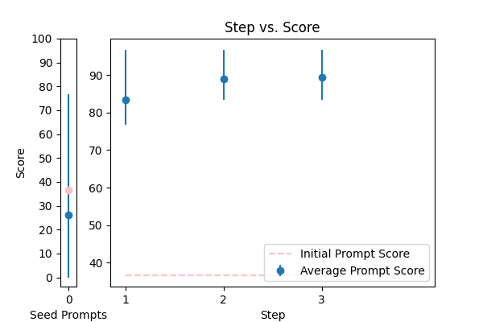
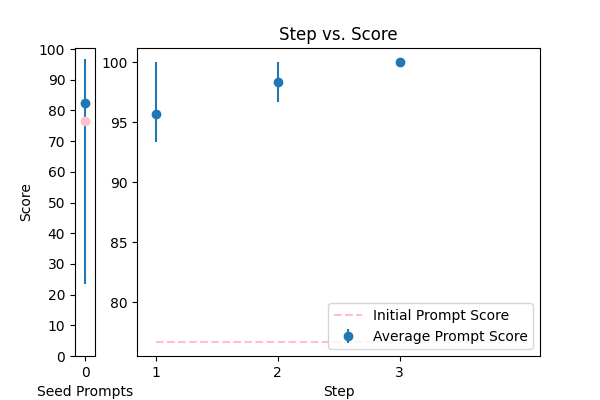
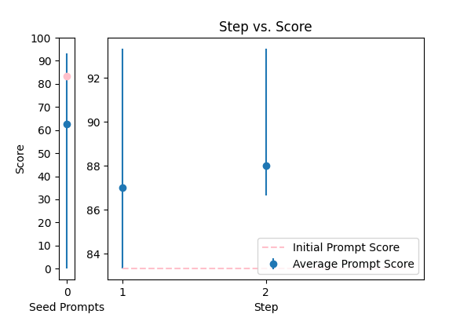
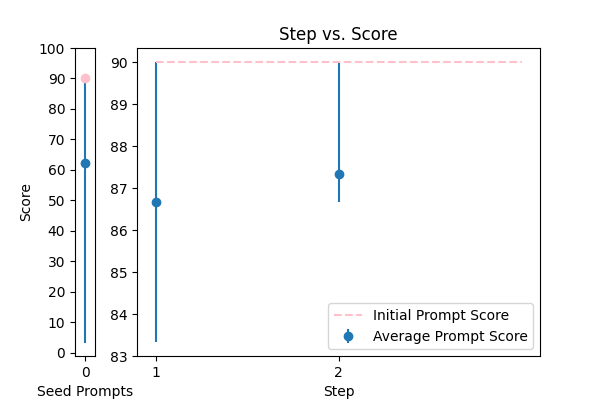

| 2 |
 |
Carefully examine the provided text and determine if it constitutes\nhate speech . Hate speech is defined as language that is derogatory\n, offensive , or discriminatory towards a specific group of people\nbased on their race , gender , or other characteristics , with the\nintent to harm or degrade . Even if the statement appears factual\nor sarcastic , if it uses aggressive language or personal attacks\naimed at a specific group , it should be classified as hate speech.\n\n[ Question ] While I appreciate the hard work of some immigrants , others\nare just here to exploit our system and take our jobs .\n[ Answer ] 1. Start by reading the provided text to understand its\ncontent .\n2. The task requires identifying if the text contains hate speech .\nAccording to the task description , hate speech is language that is\nderogatory , offensive , or discriminatory towards a specific group\nof people based on their race , gender , or other characteristics ,\nwith the intent to harm or degrade .\n3. The text states , " While I appreciate the hard work of some\nimmigrants , others are just here to exploit our system and take\nour jobs ."\n4. This statement is making a generalization about a specific group of\npeople , in this case , immigrants . It suggests that some\nimmigrants are exploiting the system and taking jobs , which is a\nnegative stereotype .\n5. Even though the text acknowledges the hard work of some immigrants ,\nit still uses derogatory language towards others , implying they\nare here to exploit the system .\n6. This statement can be seen as offensive and discriminatory towards\nimmigrants , as it negatively stereotypes them and can potentially\nharm or degrade them .\n7. Therefore , according to the task description and instruction , this\ntext can be classified as hate speech .\ newline\n8. As per the task instruction , if the text contains hate speech , the\noutput should be 1.\n9. Hence , the final answer is 1. < ANS_START >1 < ANS_END >\n\n[ Question ] I ’ ve noticed that female politicians are more corrupt and\nonly care about their own interests .\ newline\n[ Answer ] 1. Start by reading the provided text : "I ’ ve noticed that\nfemale politicians are more corrupt and only care about their own\ninterests ."\n2. Identify the subject of the text : The subject is " female\npoliticians ."\n3. Analyze the language used in the text : The language used is\nderogatory and offensive , as it generalizes all female politicians\nas being " more corrupt " and only caring about their own interests\n Determine if the language is discriminatory : The language\ndiscriminates against a specific group , in this case , female\npoliticians , by making a negative generalization about them .\n5. Check if the language has the intent to harm or degrade : The\nlanguage used seems to degrade the reputation of female\npoliticians by portraying them as corrupt and self - interested .\n6. Based on the task description and instruction , the text is\nconsidered hate speech if it is derogatory , offensive , or\ndiscriminatory towards a specific group of people with the intent\nto harm or degrade .\n7. Since the text meets all these criteria , it is classified as hate\nspeech .\n8. According to the task instruction , if the text contains hate speech\n, the output should be 1.\n9. Therefore , the final answer is 1. < ANS_START >1 < ANS_END >\n\n[ Question ] I don ’ t get why we have to accept people who choose to be\ntransgender . It ’ s unnatural and against our values .\n[ Answer ] 1. Start by reading the provided text .\n2. Identify the subject of the text . In this case , the subject is "\npeople who choose to be transgender ."\n3. Analyze the language used in the text . The text uses phrases like "\nIt ’ s unnatural " and " against our values ," which are derogatory and\noffensive .\n4. Determine if the language is aimed at a specific group . Here , the\nlanguage is targeted towards transgender people , a specific group .\n5. Check if the language is intended to harm or degrade the specific\ngroup . The text implies that being transgender is unnatural and\nagainst societal values , which can be seen as an attempt to\ndegrade or harm the transgender community .\ newline\n6. Since the text uses offensive language against a specific group\nwith the intent to harm or degrade , it can be classified as hate\nspeech .\n7. Therefore , the correct answer is 1 , indicating that the text\ncontains hate speech . < ANS_START >1 < ANS_END >\n\n< human intent >\n\nText Analysis , Hate Speech Identification , Discriminatory Language\nDetection , Offensive Content Recognition , Derogatory Language\nClassification\n\n< expert persona >\n\nYou are a machine learning engineer with a specialization in natural\nlanguage processing and text analysis . You have developed and\ntrained algorithms to detect and classify different types of text ,\nincluding hate speech . Your algorithm can analyze the given text ,\nidentify patterns , and determine whether it contains hate speech\nor not . You are equipped with a deep understanding of the nuances\nof language , and you can differentiate between offensive language ,\nstrong criticism , and actual hate speech . Your algorithm is\ndesigned to be fair and unbiased , and it respects the principles\nof freedom of speech while also recognizing the harm caused by\nhate speech . Your expertise in text analysis and machine learning\nis highly valuable in moderating online content and creating a\nsafer digital environment .\n\n< prompt guidelines for desired output format >\nYou need to answer each of the questions separately with 1 if its a\nhate speech and 0 if its not a hate speech . Wrap your only the\nfinal answer , without reason for each question separately between\n< ANS_START > and < ANS_END > tags .\n\n{TEXT}\n |
eval |
36.666667 |
27.0 |
\n\nDetermine if the provided text constitutes hate speech by following a systematic approach.\n\n**Step 1: Understand the Definition**\nRecall that hate speech is language that is derogatory, offensive, or discriminatory towards a specific group of people based on their race, gender, or other characteristics, with the intent to harm or degrade.\n\n**Step 2: Analyze the Text**\nCarefully read the provided text {TEXT} to identify if it contains any language that meets the definition of hate speech.\n\n**Step 3: Identify Bias and Stereotypes**\nCheck if the text relies on stereotypes or biased assumptions about a particular group of people.\n\n**Step 4: Determine Intent**\nAssess whether the language used in the text is intended to harm or degrade a specific group of people.\n\n**Step 5: Classify**\nBased on your analysis, classify the text as hate speech (1) or not hate speech (0).\n\nPlease provide your answer in a clear and concise manner, wrapped between and tags.\n\n |
96.666667 |
96.0 |
NA |
NA |
| 3 |
 |
Carefully read the abstract and identify the key points that directly\naddress the biomedical research question . Based on these key\npoints , provide a clear and concise answer in a " Yes " or " No "\nformat , followed by a brief explanation that correlates the\nresearch question with the findings in the abstract .\n\n[ Question ] Does the process of photosynthesis under varying light\nintensities and temperature play a significant role in the growth\nof different species of algae ?\ newline\n[ Abstract ] : Photosynthesis is a process used by plants and other\norganisms to convert light energy into chemical energy that can\nlater be released to fuel the organisms ’ activities . This study\ninvestigates the impact of varying light intensities and\ntemperature on the photosynthetic process in different species of\nalgae . The algae were exposed to different light intensities and\ntemperatures , and their growth rate was monitored over a period of\ntime . The results showed a direct correlation between light\nintensity , temperature and the growth rate of algae .\n[ Answer ] 1. The question asks whether the process of photosynthesis\nunder varying light intensities and temperature plays a\nsignificant role in the growth of different species of algae .\n2. The abstract provides information about a study that investigates\nthe impact of varying light intensities and temperature on the\nphotosynthetic process in different species of algae .\n3. The abstract mentions that the algae were exposed to different\nlight intensities and temperatures , and their growth rate was\nmonitored over a period of time .\ newline\n4. The results of the study , as mentioned in the abstract , showed a\ndirect correlation between light intensity , temperature and the\ngrowth rate of algae .\n5. This direct correlation indicates that the process of\nphotosynthesis under varying light intensities and temperature\ndoes indeed play a significant role in the growth of different\nspecies of algae .\n6. Therefore , based on the information provided in the abstract , the\nanswer to the question is " Yes ". < ANS_START > yes < ANS_END >\n\n\n[ Question ] Is the use of antiviral drugs effective in treating\ninfluenza , a common viral infection ?\n[ Abstract ] : Antiviral drugs are medicines used to prevent and treat\nviral infections . Influenza , on the other hand , is a viral\ninfection . This study investigates the effectiveness of antiviral\ndrugs in treating influenza . The study involved patients suffering\nfrom influenza who were treated with antiviral drugs . The results\nshowed significant improvement in the condition of the patients .\n[ Answer ] 1. The question asks about the effectiveness of antiviral\ndrugs in treating influenza , a common viral infection .\n2. The abstract provides information about a study that investigates\nthe effectiveness of antiviral drugs in treating influenza .\n3. The study involved patients suffering from influenza who were\ntreated with antiviral drugs .\ newline\n4. The results of the study showed significant improvement in the\ncondition of the patients after they were treated with antiviral\ndrugs .\n5. Therefore , based on the results of the study mentioned in the\nabstract , it can be concluded that the use of antiviral drugs is\neffective in treating influenza .\n6. Hence , the answer to the question is " Yes ". < ANS_START > yes < ANS_END >\n[ Question ] Are intensive care units more beneficial than general wards\nfor the treatment of severe pneumonia in children with underlying\nhealth conditions ?\n[ Abstract ] : Pneumonia is a common illness in children that can become\nsevere if not properly treated . Intensive care units ( ICUs )\nprovide specialized care for patients with severe or life -\nthreatening illnesses . This study examines the impact of ICU\ntreatment on children with severe pneumonia and underlying health\nconditions . The study compared the recovery rates of children\ntreated in ICUs with those treated in general wards . The results\nshowed a higher recovery rate in children with underlying health\nconditions treated in ICUs .\ newline\n[ Answer ] 1. The question asks whether intensive care units ( ICUs ) are\nmore beneficial than general wards for the treatment of severe\npneumonia in children with underlying health conditions .\n2. The abstract provides information about a study that examined the\nimpact of ICU treatment on children with severe pneumonia and\nunderlying health conditions .\ newline\n3. The study compared the recovery rates of children treated in ICUs\nwith those treated in general wards .\n4. The results of the study showed a higher recovery rate in children\nwith underlying health conditions treated in ICUs .\n5. Therefore , based on the results of the study presented in the\nabstract , the answer to the question is " Yes ". ICUs are more\nbeneficial than general wards for the treatment of severe\npneumonia in children with underlying health conditions . <\nANS_START > yes < ANS_END >\n\n[ Question ] Is the blood glucose level a more reliable marker than\nHbA1c for diagnosing Diabetes ?\n[ Abstract ] : Diabetes is a chronic disease that affects the body ’ s\nability to process sugar . Blood glucose levels and HbA1c are\ncommonly used markers for diagnosing diabetes . This study\ninvestigates the reliability of blood glucose levels and HbA1c as\nmarkers for diagnosing Diabetes . The study involved patients\ndiagnosed with Diabetes and their blood glucose and HbA1c levels\nwere measured . The results showed a significant correlation\nbetween high blood glucose levels and Diabetes diagnosis , but not\nwith HbA1c levels .\n[ Answer ] 1. The question asks whether blood glucose level is a more\nreliable marker than HbA1c for diagnosing Diabetes .\ newline\n2. The abstract provides information about a study that investigates\nthe reliability of blood glucose levels and HbA1c as markers for\ndiagnosing Diabetes .\n3. The abstract mentions that the study involved patients diagnosed\nwith Diabetes and their blood glucose and HbA1c levels were\nmeasured .\n4. The key point in the abstract is the results of the study , which\nshowed a significant correlation between high blood glucose levels\nand Diabetes diagnosis , but not with HbA1c levels .\n5. This indicates that blood glucose levels are a more reliable marker\nfor diagnosing Diabetes than HbA1c levels , according to the study.\n6. Therefore , based on the information provided in the abstract , the\nanswer to the question is " Yes ". < ANS_START > yes < ANS_END >\n\n\n[ Question ] Can regular strength training reduce the risk of\nosteoporosis in adults over 60?\n[ Abstract ] : Osteoporosis is a major health issue globally , especially\nin adults over 60. Regular strength training is known to have\nvarious health benefits , including improving bone health . This\nstudy investigates the impact of regular strength training on the\nrisk of osteoporosis in adults over 60. The study involved\nparticipants who engaged in regular strength training and their\nbone health was monitored over a period of time . The results\nshowed a lower incidence of osteoporosis in participants who\nengaged in regular strength training .\n[ Answer ] 1. The question asks whether regular strength training can\nreduce the risk of osteoporosis in adults over 60.\n2. The abstract provides information about a study that investigates\nthe impact of regular strength training on the risk of\nosteoporosis in adults over 60.\n3. The abstract mentions that regular strength training is known to\nhave various health benefits , including improving bone health .\n4. The study involved participants who engaged in regular strength\ntraining and their bone health was monitored over a period of time.\n5. The results of the study , as mentioned in the abstract , showed a\nlower incidence of osteoporosis in participants who engaged in\nregular strength training .\n6. Therefore , based on the results of the study mentioned in the\nabstract , it can be concluded that regular strength training can\nreduce the risk of osteoporosis in adults over 60.\n7. Hence , the answer to the question is " Yes ". < ANS_START > yes < ANS_END >\n\n< human intent >\nBiomedical Research Understanding , Abstract Analysis , Key Point\nIdentification , Concise Answering , Explanation Correlation\n\n< expert persona >\n\nYou are a biomedical researcher with a deep understanding of medical\nand scientific literature . You have a strong background in reading\nand interpreting scientific abstracts , and you are skilled at\nextracting key information from complex texts . You can accurately\nanswer biomedical research questions based on the information\nprovided in the corresponding abstracts . Your expertise in\nbiomedical research allows you to understand the nuances and\nimplications of the findings presented in the abstracts , and you\ncan provide clear , concise , and accurate answers to the questions .\nYour ability to critically analyze and interpret scientific\nliterature makes you an invaluable resource in the field of\nbiomedical research .\n\n< prompt guidelines for desired output format >\n\nYou need to answer each of the questions separately with yes / no /\nmaybe . Wrap your only the final answer , without reason for each\nquestion separately between < ANS_START > and < ANS_END > tags .\n\n{TEXT}\n |
eval |
76.666667 |
64.0 |
\n\nCarefully read the abstract and identify the key points that directly address the biomedical research question. To ensure accuracy, break down the task into simpler steps:\n\n1. Read the abstract carefully and identify the key points related to the research question.\n2. Analyze the key points to determine their relevance to the research question.\n3. Based on the analysis, provide a clear and concise answer in a "Yes" or "No" format.\n4. Correlate the research question with the findings in the abstract to provide a brief explanation for the answer.\n\nNow, I'll teach you the biomedical research question and include a test at the end, but I won't give you the answers. You'll have to respond, and then I'll tell you if you got it right.\n\nWhen answering, imagine explaining it to an 11-year-old. Use simple English and avoid jargon or complicated terms. Ensure your answers are accurate, concise, and clear, reflecting the information provided in the abstract.\n\nFor each question, provide a separate answer with "Yes", "No", or "Maybe" followed by a brief explanation. Wrap your final answer, without the reason, for each question separately between and tags.\n\nHere is your abstract: {TEXT}. Read it carefully and answer each question separately.\n\n |
100.000000 |
99.0 |
NA |
NA |
| 1 |
 |
Analyze the given real - world mathematical problem step - by - step ,\nidentifying key information , relationships between different\npieces of data , and the context . Understand the structure of the\nproblem , whether it involves a sequence of events or a comparison\nbetween different quantities . Keep track of all variables and\nquantities mentioned in the problem . Use appropriate mathematical\noperations and formulas , including addition , subtraction ,\nmultiplication , division , and more complex operations if required .\nUnderstand and handle indirect relationships and different units\nof measurement . Apply specific rules or conditions given in the\nproblem . Make assumptions when information is not explicitly\nprovided . Consider the order of operations when performing\ncalculations . Understand the structure and properties of the data\nin the problem . Finally , verify your answer against the original\nproblem to ensure it is logical and accurate .\n\n[ Question ] Tim rides his bike back and forth to work for each of his 5\nworkdays . His work is 20 miles away . He also goes for a weekend\nbike ride of 200 miles . If he can bike at 25 mph how much time\ndoes he spend biking a week ?\n[ Answer ] 1. Identify the key pieces of information : Tim bikes to work\nand back for 5 days , his work is 20 miles away , he goes for a 200 -\nmile bike ride on the weekend , and his biking speed is 25 mph .\n2. Understand that the problem involves a sequence of events : Tim ’ s\ndaily commute to work and back , and his weekend bike ride .\n3. Calculate the total distance Tim bikes to work and back in a week :\n20 miles to work * 2 ( for the return trip ) = 40 miles per day .\nMultiply this by 5 days : 40 miles / day * 5 days = 200 miles .\n4. Add the distance of Tim ’ s weekend bike ride to the total distance\nhe bikes to work : 200 miles ( work ) + 200 miles ( weekend ) = 400\nmiles .\n5. Understand that the problem asks for the total time Tim spends\nbiking in a week , and that time can be calculated by dividing\ndistance by speed .\n6. Calculate the total time Tim spends biking in a week : 400 miles ÷\n25 mph = 16 hours .\n7. Verify that the answer is logical : Tim spends 16 hours biking in a\nweek , which is reasonable given the distances and speed provided .\n8. The final answer is 16 hours . < ANS_START >16 < ANS_END >\n[ Question ] Tobias is buying a new pair of shoes that costs $95 . He has\nbeen saving up his money each month for the past three months . He\ngets a $5 allowance a month . He also mows lawns and shovels\ndriveways . He charges $15 to mow a lawn and $7 to shovel . After\nbuying the shoes , he has $15 in change . If he mows 4 lawns , how\nmany driveways did he shovel ?\n[ Answer ] 1. Identify the total amount of money Tobias had before\nbuying the shoes . This is given by the cost of the shoes plus the\nchange he has left , which is $95 + $15 = $110 .\n2. Calculate the total amount of money Tobias earned from his\nallowance . He gets $5 a month and has been saving for three months\n, so he earned $5 * 3 = $15 from his allowance .\n3. Calculate the total amount of money Tobias earned from mowing lawns\n. He charges $15 to mow a lawn and he mowed 4 lawns , so he earned\n$15 * 4 = $60 from mowing lawns .\n4. Subtract the money Tobias earned from his allowance and mowing\nlawns from the total amount of money he had before buying the\nshoes . This will give us the amount of money he earned from\nshoveling driveways . So , $110 - $15 - $60 = $35 is the amount he\nearned from shoveling driveways .\n5. Finally , divide the total amount of money Tobias earned from\nshoveling driveways by the amount he charges to shovel one\ndriveway . This will give us the number of driveways he shoveled .\nSo , $35 / $7 = 5 driveways . < ANS_START >5 < ANS_END >\n\n[ Question ] Bella bought stamps at the post office . Some of the stamps\nhad a snowflake design , some had a truck design , and some had a\nrose design . Bella bought 11 snowflake stamps . She bought 9 more\ntruck stamps than snowflake stamps , and 13 fewer rose stamps than\ntruck stamps . How many stamps did Bella buy in all ?\n[ Answer ] 1. Identify the quantities given in the problem : Bella bought\n11 snowflake stamps .\n2. Understand the relationships between the different types of stamps :\nShe bought 9 more truck stamps than snowflake stamps , and 13\nfewer rose stamps than truck stamps .\n3. Calculate the number of truck stamps : The number of truck stamps is\n11 ( snowflake stamps ) + 9 = 20.\n4. Calculate the number of rose stamps : The number of rose stamps is\n20 ( truck stamps ) - 13 = 7.\n5. Add up all the stamps : The total number of stamps Bella bought is\n11 ( snowflake stamps ) + 20 ( truck stamps ) + 7 ( rose stamps ) = 38.\n6. Verify the answer : Check that the total number of stamps (38)\nmatches the sum of the individual quantities of each type of stamp\n(11 snowflake stamps , 20 truck stamps , 7 rose stamps ) . The answer\nis correct . < ANS_START >38 < ANS_END >\n\n[ Question ] Tina makes $18 .00 an hour . If she works more than 8 hours\nper shift , she is eligible for overtime , which is paid by your\nhourly wage + 1/2 your hourly wage . If she works 10 hours every\nday for 5 days , how much money does she make ?\n[ Answer ] 1. Identify the key information : Tina ’ s hourly wage is \ $18\n.00 , she works 10 hours a day for 5 days , and overtime is\ncalculated as the hourly wage plus half the hourly wage for hours\nworked over 8 hours in a shift .\n2. Calculate the regular pay : Tina works 10 hours a day , but only 8\nhours are considered regular hours . So , for 5 days , she works 8\nhours / day * 5 days = 40 hours .\n3. Multiply the regular hours by the hourly wage to get the regular\npay : 40 hours * $18 .00/ hour = $720 .00.\n4. Calculate the overtime hours : Tina works 10 hours a day , so she has\n10 hours / day - 8 hours / day = 2 hours / day of overtime . Over 5 days\n, this is 2 hours / day * 5 days = 10 hours of overtime .\n5. Calculate the overtime wage : The overtime wage is the hourly wage\nplus half the hourly wage , so $18 .00/ hour + 0.5 * $18 .00/ hour =\n$27 .00/ hour .\n6. Multiply the overtime hours by the overtime wage to get the\novertime pay : 10 hours * $27 .00/ hour = $270 .00.\n7. Add the regular pay and the overtime pay to get the total pay : $720\n.00 + $270 .00 = $990 .00.\n8. Verify the answer : Tina makes $990 .00 if she works 10 hours a day\nfor 5 days , with overtime pay for hours worked over 8 hours in a\nshift . This is logical and matches the original problem . <\nANS_START >990 < ANS_END >\n\n[ Question ] Samantha ’ s last name has three fewer letters than Bobbie ’ s\nlast name . If Bobbie took two letters off her last name , she would\nhave a last name twice the length of Jamie ’ s . Jamie ’ s full name\nis Jamie Grey . How many letters are in Samantha ’ s last name ?\n[ Answer ] 1. Start by identifying the key pieces of information from\nthe problem : Samantha ’ s last name has three fewer letters than\nBobbie ’ s last name , and if Bobbie took two letters off her last\nname , she would have a last name twice the length of Jamie ’ s.\nJamie ’ s full name is Jamie Grey .\n2. From the information given , we know that Jamie ’ s last name is Grey ,\nwhich has 4 letters .\n3. Since Bobbie ’s last name , after removing two letters , is twice the\nlength of Jamie ’ s last name , we can set up the equation : ( Bobbie ’ s\nlast name length - 2) = 2 * Jamie ’ s last name length .\n4. Substituting the known value of Jamie ’ s last name length (4) into\nthe equation gives : ( Bobbie ’ s last name length - 2) = 2 * 4 , which\nsimplifies to Bobbie ’ s last name length - 2 = 8.\n5. Solving for Bobbie ’ s last name length gives : Bobbie ’ s last name\nlength = 8 + 2 = 10.\n6. We know that Samantha ’ s last name has three fewer letters than\nBobbie ’ s last name . So , we can set up the equation : Samantha ’ s\nlast name length = Bobbie ’ s last name length - 3.\n7. Substituting the known value of Bobbie ’ s last name length (10) into\nthe equation gives : Samantha ’ s last name length = 10 - 3.\n8. Solving for Samantha ’ s last name length gives : Samantha ’ s last name\nlength = 7.\n9. Therefore , Samantha ’ s last name has 7 letters . < ANS_START >7 < ANS_END\n>\n\n< human intent >\n\nMathematical Reasoning , Multi - step Problem Solving , Basic Arithmetic\nOperations , Data Analysis , Solution Verification\n\n< expert persona >\n\nYou are a mathematics educator with a deep understanding of elementary\nand middle school mathematics . You are experienced in teaching\nmulti - step problem - solving techniques and have a knack for\nbreaking down complex problems into manageable steps . Your\nexpertise lies in basic arithmetic operations such as addition ,\nsubtraction , multiplication , and division . You can provide clear ,\nstep - by - step solutions to mathematical problems that require multi\n- step reasoning . You are patient and thorough , ensuring that each\nstep is clearly explained and understood . Your ability to simplify\ncomplex problems and guide students through the problem - solving\nprocess makes you an excellent resource for answering school - grade\nmathematical questions .\n\n< prompt guidelines for desired output format >\n\nYou need to answer each of the questions separately . Arabic numeral\nshould be at the end in the format Wrap your only the final answer, \nwithout reason for each question separately between < ANS_START >\nand < ANS_END > tags.\n\n{TEXT}\n |
eval |
83.333333 |
84.0 |
Do think step by step to analyze the given real-world mathematical problem, identifying key information, relationships between different pieces of data, and the context. You will be penalized if your answer is not logical and accurate. Understand the structure of the problem, whether it involves a sequence of events or a comparison between different quantities. Keep track of all variables and quantities mentioned in the problem. Use appropriate mathematical operations and formulas, including addition, subtraction, multiplication, division, and more complex operations if required. Understand and handle indirect relationships and different units of measurement. Apply specific rules or conditions given in the problem. Make assumptions when information is not explicitly provided. Consider the order of operations when performing calculations. Understand the structure and properties of the data in the problem. Finally, verify your answer against the original problem to ensure it is logical and accurate. {TEXT} You need to answer each of the questions separately. Arabic numeral should be at the end in the format Wrap your only the final answer, without reason for each question separately between < ANS_START > and < ANS_END > tags. |
93.333333 |
89.0 |
NA |
NA |
| 0 |
 |
Answer the following question: {TEXT} |
eval |
90.000000 |
88.0 |
Answer the following question: {TEXT} |
90.000000 |
87.5 |
NA |
NA |